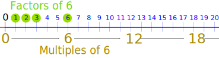
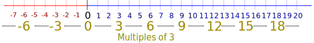
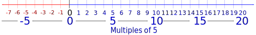

Factors and Multiples
Factors and multiples are different things.
But they both involve multiplication:
- Factors are what we can multiply to get the number
- Multiples are what we get after multiplying the number by an integer (not a fraction).
Example: the positive factors, and some multiples, of 6:

Factors:
- 1 × 6 = 6, so 1 and 6 are factors of 6
- 2 × 3 = 6, so 2 and 3 are factors of 6
Multiples:
- 0 × 6 = 0, so 0 is a multiple of 6
- 1 × 6 = 6, so 6 is a multiple of 6
- 2 × 6 = 12, so 12 is a multiple of 6
- and so on
(Note: there are negative factors and multiples as well)
Here are the details:
Factors
"Factors" are the numbers we can multiply together to get another number:

2 and 3 are factors of 6
A number can have many factors.
Example: 12
- 3 × 4 = 12, so 3 and 4 are factors of 12
- Also 2 × 6 = 12, so 2 and 6 are also factors of 12,
- And 1 × 12 = 12, so 1 and 12 are factors of 12 as well.
AND because multiplying negatives makes a positive, −1, −2, −3, −4, −6 and −12 are also factors of 12:
- (−1) × (−12) = 12
- (−2) × (−6) = 12
- (−3) × (−4) = 12
So ALL the factors of 12 are:
1, 2, 3, 4, 6 and 12
AND −1, −2, −3, −4, −6 and −12
Learn about Greatest Common Factor and how to find All Factors of a Number.
Multiples
A multiple is the result of multiplying a number by an integer (not a fraction).
Example: Multiples of 3:

..., −9, −6, −3, 0, 3, 6, 9, ...
Example: 15 is a multiple of 3, as 3 × 5 = 15
Example: 16 is not a multiple of 3
Example: Multiples of 5:

..., −15, −10, −5, 0, 5, 10, 15, ...
Example: 10 is a multiple of 5, as 5 × 2 = 10
Example: 11 is not a multiple of 5
Multiples of Anything
We must multiply by an integer, but the number that is being multiplied can be anything.
Example: Multiples of π
..., −2π, −π, 0, π, 2π, 3π, 4π, ...